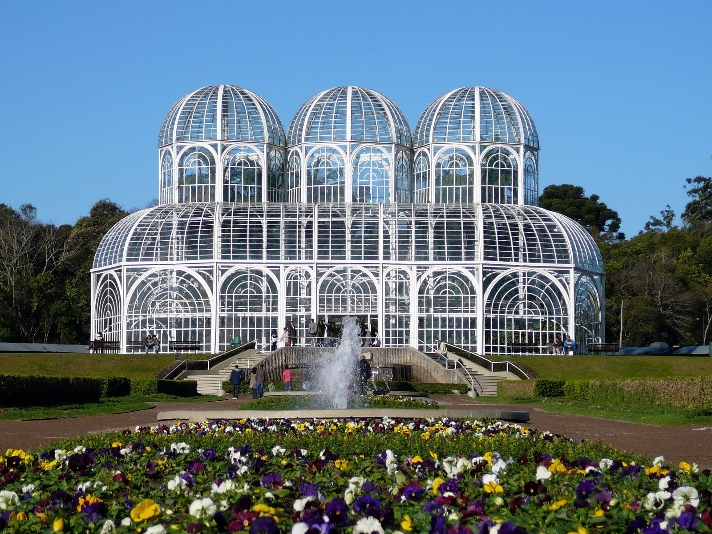
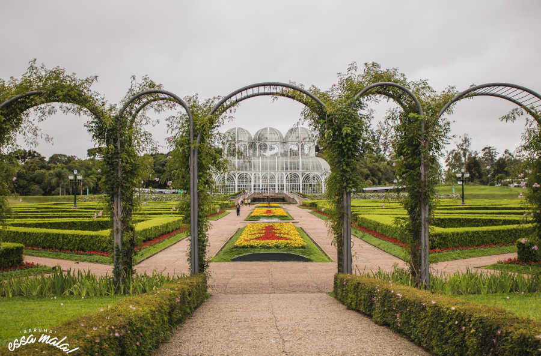

jardim botânico e como ele se tornou o maior simbolo do paraná
No nosso site veremos como o jardim botânico de curitiba é um dos pontos turisticos mais famosos do paraná e como se tornou um dos principais símbolo do estado. Inaugurado em 1991, ele ficou conhecido pela sua estufa de vidro inspirada nos palácios de cristal europeu, cercada por jardins bem cuidados e uma bela paisagem. Sua beleza e arquitetura marcante fizeram com que ele ganhasse destaque em fotografias, cartões-postais e materiais de divulgação turisticas. Com o tempo o jardim botânico passou a representar curitiba e o paraná, sendo reconhecido como símbolo de beleza natural e cultura da região.

historia do jardim botânico
o jardim botânio de curitiba foi fundado no dia 5 de outubro de 1991 durange a gestão do prefeito jaime lerner, ele foi criado para valorizae a natureza preservar espécies vegetais e oferecer um espaço de lazer à população. sua estufa de vidro inspirada em jardins franceses e nos paláios de cristais europeus, tornou-se a sua principal característica. com crescimento do turismo em curitiba nos anos 1990 o jardim botânico ganhou destaque e se transformou em um dos maiores simbolos da cidade e do estado do paraná
